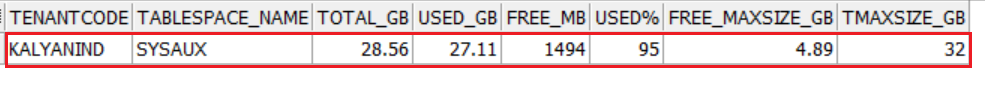
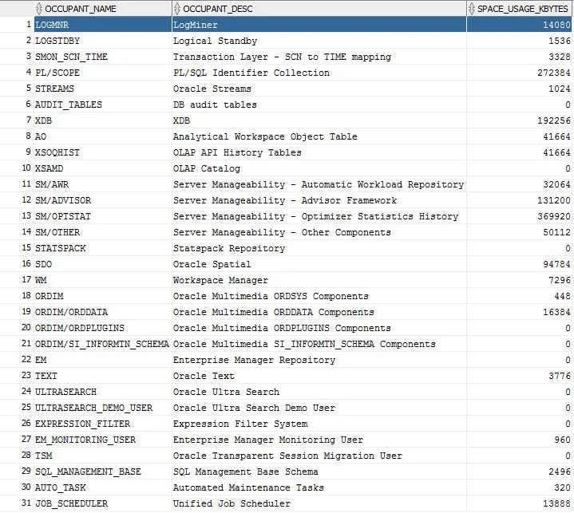
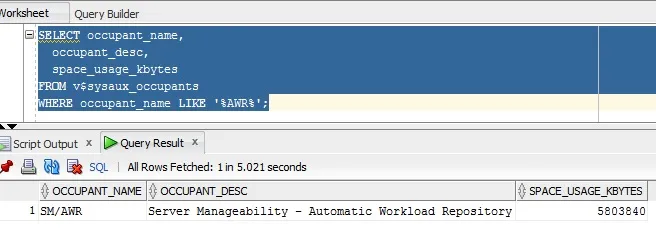
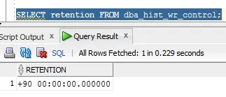
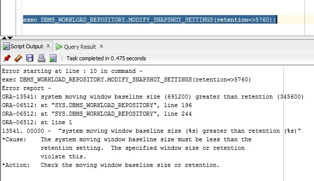
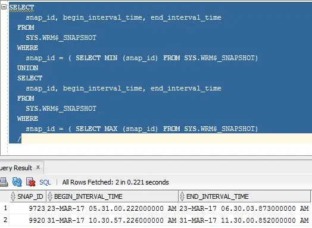

Cleaning ORACLE SYSAUX Tablespace Usage¶
If the SYSAUX tablespace in an Oracle instance has grown significantly, eventually filling up the entire tablespace, and you find yourself unable to resize the tablespace to free up space, this article will help to release some used space in SYSAUX to continue normal database operations. First, we will cover some basics about SYSAUX to help understand the process better.
SYSAUX Tablespace Overview¶
In Oracle, the SYSAUX tablespace is considered an auxiliary tablespace to the SYSTEM tablespace. It is required by Oracle as a default tablespace for many database features and products. Prior to SYSAUX, Oracle required multiple tablespaces to support the same database features and products. Thus, using the SYSAUX tablespace reduces the load on the SYSTEM tablespace.
Restrictions on SYSAUX Tablespace¶
- Using the
SYSAUX DATAFILEclause in theCREATE DATABASEstatement, you can specify only datafile attributes in the SYSAUX tablespace. - You cannot alter attributes like (
PERMANENT,READ WRITE,EXTENT MANAGEMENT LOCAL,SEGMENT SPACE MANAGEMENT AUTO) with anALTER TABLESPACEstatement. - The SYSAUX tablespace cannot be dropped or renamed.
Cleanup Automatic Workload Repository (AWR Data)¶
To free up space when the Oracle SYSAUX tablespace is full, we can clean up AWR data.
Step 1: Check SYSAUX Tablespace Size¶
Check the size of the SYSAUX tablespace before cleanup:

Step 2: Identify Space Occupants in SYSAUX¶
Run the following query to identify which occupants are consuming the most space in SYSAUX:
SELECT occupant_name, occupant_desc, space_usage_kbytes
FROM v$sysaux_occupants;

AWR (SM/AWR) typically consumes a significant amount of space. You can query AWR consumption details as shown below:

Step 3: Check and Modify AWR Retention Period¶
Check the current AWR retention period:
SELECT retention FROM dba_hist_wr_control;

If the retention is set to a high value (e.g., 90 days) and this is not required, you can reduce it. For example, to set it to 7 days (7 * 24 * 60 = 10080 minutes) with a snapshot interval of 60 minutes, execute:
EXECUTE dbms_workload_repository.modify_snapshot_settings(interval => 60, retention => 10080);
Step 4: Handle Retention Period Errors (Baseline Window Size)¶
If you encounter an error while reducing the retention period, check the MOVING_WINDOW_SIZE value. Update it to the correct value and then re-execute the snapshot settings modification query:
EXEC DBMS_WORKLOAD_REPOSITORY.modify_baseline_window_size(window_size => 7);
To verify the updated moving window size:
SELECT moving_window_size
FROM dba_hist_baseline
WHERE baseline_type = 'MOVING_WINDOW';

Step 5: Identify Old AWR Snapshots¶
Identify the oldest and newest AWR snapshots currently stored in the repository:
SELECT snap_id, begin_interval_time, end_interval_time
FROM SYS.WRM$_SNAPSHOT
WHERE snap_id = (SELECT MIN(snap_id) FROM SYS.WRM$_SNAPSHOT)
UNION
SELECT snap_id, begin_interval_time, end_interval_time
FROM SYS.WRM$_SNAPSHOT
WHERE snap_id = (SELECT MAX(snap_id) FROM SYS.WRM$_SNAPSHOT);
/

Step 6: Drop Snapshots in the Identified Range¶
Execute the following command to cleanup all AWR snapshots between the desired range (e.g., snap ID 9723 to 9920):
BEGIN
dbms_workload_repository.drop_snapshot_range(low_snap_id => 9723, high_snap_id => 9920);
END;
/
Alternative: Rebuild AWR Repositories¶
If the drop process above takes too long, you can connect as SYSDBA to drop old AWR tables and rebuild the repository tables. This method is much faster:
conn / as sysdba
@?/rdbms/admin/catnoawr.sql
@?/rdbms/admin/catawrtb.sql
After clearing the AWR reports, check the space freed:
SELECT occupant_name, occupant_desc, space_usage_kbytes
FROM v$sysaux_occupants
WHERE occupant_name LIKE '%AWR%';
OCCUPANT_NAME OCCUPANT_DESC SPACE_USAGE_KBYTES
------------- ----------------------------------------------------------- ------------------
SM/AWR Server Manageability - Automatic Workload Repository 35072
Verify tablespace capacity and free space:
Tablespace Used MB Free MB Total MB Pct. Free
------------------------- ---------- --------- --------- ----------
EXAMPLE 1,219 42 1,261 3.33
SYSTEM 2,438 634 3,072 20.64
SYSAUX 639 211 850 24.82
USERS 2 3 5 60
METALS 41 359 400 89.75
UNDOTBS1 36 609 645 94.42
6 rows selected.
SYSAUX Tablespace Cleanup (AUDSYS Objects)¶
If the SYSAUX tablespace continues to fill up, check if the AUDSYS schema objects are the top consumers. This occurs when unified auditing is enabled, creating audit records regardless of the audit_trail parameter value.
Note: You can run the script
$ORACLE_HOME/rdbms/admin/awrinfo.sqlto identify top consumers in the SYSAUX tablespace.
Step 1: Identify Top Consumers in the SYSAUX Tablespace¶
Run the following query to list the top 5 largest segments in the SYSAUX tablespace:
COLUMN owner FORMAT A6
COLUMN segment_name FORMAT A50
SELECT * FROM (
SELECT owner, segment_name || '~' || partition_name AS segment_name, bytes / (1024 * 1024) AS size_m
FROM dba_segments
WHERE tablespace_name = 'SYSAUX'
ORDER BY blocks DESC
) WHERE rownum < 6;
Example Output:
OWNER SEGMENT_NAME SIZE_M
------ ---------------------------------- ----------
AUDSYS SYS_LOB0000091751C00014$$~ 17808.125
AUDSYS CLI_SWP$8e0bfd86$1$1~ 14296
AUDSYS CLI_TIME$8e0bfd86$1$1~ 232
AUDSYS CLI_SCN$8e0bfd86$1$1~ 224
AUDSYS CLI_LOB$8e0bfd86$1$1~ 209
Step 2: Clean the Unified Audit Trail¶
You can clean the unified audit trail using one of the following two options.
Option A: Complete Cleanup (Empty All Audit Records)¶
BEGIN
DBMS_AUDIT_MGMT.CLEAN_AUDIT_TRAIL(
AUDIT_TRAIL_TYPE => DBMS_AUDIT_MGMT.AUDIT_TRAIL_UNIFIED,
USE_LAST_ARCH_TIMESTAMP => FALSE,
CONTAINER => DBMS_AUDIT_MGMT.CONTAINER_CURRENT
);
END;
/
Option B: Partial Cleanup (Keep Last 15 Days of Records)¶
Set the archive timestamp to keep the last 15 days of data:
BEGIN
DBMS_AUDIT_MGMT.set_last_archive_timestamp(
audit_trail_type => DBMS_AUDIT_MGMT.audit_trail_unified,
last_archive_time => SYSTIMESTAMP - 15,
container => DBMS_AUDIT_MGMT.container_current
);
END;
/
Step 3: Check Archive Timestamp Settings¶
Verify the configured archive timestamp settings:
COLUMN audit_trail FORMAT A20
COLUMN last_archive_ts FORMAT A40
SELECT audit_trail, last_archive_ts FROM dba_audit_mgmt_last_arch_ts;
AUDIT_TRAIL LAST_ARCHIVE_TS
------------------- ---------------------------------------
UNIFIED AUDIT TRAIL 18-JUL-18 02.26.17.000000 AM +00:00
Alternatively, you can set the archive timestamp explicitly using TO_TIMESTAMP:
BEGIN
DBMS_AUDIT_MGMT.SET_LAST_ARCHIVE_TIMESTAMP(
audit_trail_type => DBMS_AUDIT_MGMT.AUDIT_TRAIL_OS,
last_archive_time => TO_TIMESTAMP('10-SEP-07 14:10:10.0', 'DD-MON-RR HH24:MI:SS.FF')
);
END;
/
Step 4: Execute the Cleanup Job¶
Run the cleanup job using the previously defined last archive timestamp settings:
BEGIN
DBMS_AUDIT_MGMT.CLEAN_AUDIT_TRAIL(
audit_trail_type => DBMS_AUDIT_MGMT.AUDIT_TRAIL_UNIFIED,
use_last_arch_timestamp => TRUE
);
END;
/
Step 5: Flush Audit Data from Memory¶
EXEC DBMS_AUDIT_MGMT.FLUSH_UNIFIED_AUDIT_TRAIL;
Step 6: Disable Default Unified Audit Policies¶
To prevent the audit trail from rapidly growing, disable default logging policies that are not required:
NOAUDIT POLICY ORA_SECURECONFIG;
NOAUDIT POLICY ORA_LOGON_FAILURES;
Note: If needed, policies can be re-enabled later:
AUDIT POLICY ORA_SECURECONFIG; AUDIT POLICY ORA_LOGON_FAILURES;
Step 7: Verify Audit Cleanup Results¶
Log in as SYSDBA and count records in the unified audit trail:
conn / as sysdba
SELECT count(*) FROM unified_audit_trail;
COUNT(*)
----------
454543252
Execute a complete cleanup command if a full purge is desired:
BEGIN
DBMS_AUDIT_MGMT.CLEAN_AUDIT_TRAIL(
audit_trail_type => DBMS_AUDIT_MGMT.AUDIT_TRAIL_UNIFIED,
use_last_arch_timestamp => FALSE
);
END;
/
Verify that the table has been cleaned:
SELECT count(*) FROM unified_audit_trail;
COUNT(*)
----------
1